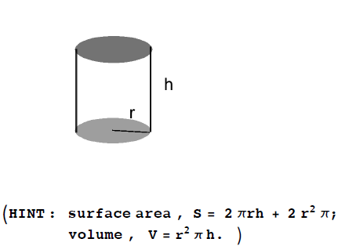

We have two formulas: \(V=\pi r^2h\) and \(S=2 \pi rh+2r^2\pi \). We know \(V=2\pi \) and want to find the \(r\) that minimizes \(S\). Since we need a forumula for \(S\) only in terms of \(r\) we are going to rewrite \(V=\pi r^2h\) to give us a formula for for \(h\) in terms of \(r\).
\begin{align*} V=2\pi \text {and}\ V=\pi r^2h \implies 2\pi &= \pi r^2h\\ \frac {2\pi }{\pi r^2}&=h\\ \frac {2}{r^2}&=h\\ \implies S(r)&=2 \pi r\left (\frac {2}{r^2}\right )+2r^2\pi \\ S(r)&=\frac {4\pi }{r}+2r^2\pi \end{align*}
The domain is \((0,\infty )\).
Next, we need to minimize \(S\).
\begin{align*} S'(r)&=\frac {-4\pi }{r^2}+4\pi r\\ &=4\pi \left (r-\frac {1}{r^2}\right ) \end{align*}
To find the critical points:
\begin{align*} r-\frac {1}{r^2}&=0\\ r&=\frac {1}{r^2}\\ r^3&=1\\ r&=1 \end{align*}
The only critical point of \(S\) is at \(r=1\). We need to verify \(r=1\) is a local extremum.
We can use the second derivative test:
\begin{align*} S''(r)&=8\pi r^{-3}+4\pi \\ \implies S''(1)&=8\pi +4\pi >0 \end{align*}
The function \(S\) has a local minimum at \(r=1\). So \((1,S(1)\) is the global minimum since this is the only local extremum. (See Theorem 4.5).